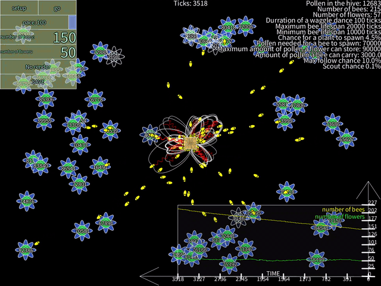

Beehive — bee colony simulation case study.

Beehive is an agent-based simulation of a honeybee colony built in Processing (Python mode). It models the waggle dance — the figure-eight communication behaviour real bees use to share the direction and distance of food sources — and observes how this simple mechanism drives efficient collective foraging across the whole colony.
Each bee operates as an independent agent cycling through five states: idle, search, harvesting, returning, and dance. When a bee returns from a rich flower it performs the waggle dance at the hive for a number of ticks proportional to the remaining pollen. Idle bees observe the dancers and, with a probability scaled to dance intensity, fly directly to that flower — bypassing the costly random search phase entirely. Flowers deplete as bees harvest them and can spawn new ones nearby, while the hive converts accumulated pollen into new bees once a threshold is crossed.
A real-time graph in the corner tracks bee population and flower count over time. As flowers cluster and bees recruit each other through dance, you can watch the colony shift from scattered searching to coordinated exploitation — emergent efficiency from individually simple rules.